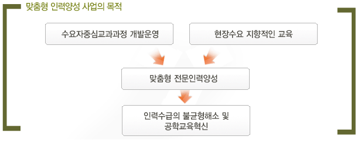
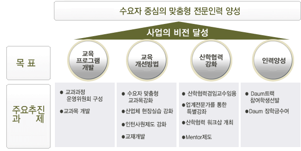

Daum은 IT의 발전을 기여하기 위해 사회 진출을 앞둔 대학생들을 대상으로 Daum을 통한 실무적인 방법론을 교육하고 학습함으로서 실무형 인력을 양성하는데 이바지 하고 있습니다.
제주대 Daum트랙
준비 중
준비 중
제주대 다음트랙 2007년 부터 시작하였으며,
매년 30~40명의 학생이 수료하고 있으며 현재까지 약 500명 학생이 수업에 참여 하였습니다.
목적
맞춤형 인재 양성을 위한 웹 서비스 기반 기술 중심의 목적 지향형 교과과정 및 교육 시스템 제공
현장에 바로 투입할 수 있는 실무 강화형 고급 인력을 효과적으로 양성
산업체 및 대학 여건에 따른 공학교육 특성화 전략을 마련함으로써 공학 교육 혁신
지역 산업체와의 긴밀한 교류와 협력을 통하여 지역발전을 위한 기반 마련


학기별 트랙 교과목
1학년: 없음
2학년: 인터넷프로그래밍실습, C++ 프로그래밍, 자료구조
3학년: 운영제체설계, 정보통신, 인터넷프로토콜, 객체지향프로그래밍, , 다학제간캡스톤디자인, 소프트웨어공학, 데이타베이스,
4학년: 현장실습, 인턴쉽
직접 강의 과목
2학년 1학기 :
오픈소스개발론
(윤석찬)
2학년 2학기 :
기초 FT 개발론
(이원주)
3학년 1학기 :
고급 FT 개발론
(강순범)
3학년 2학기 :
기초 웹 개발
(백명석)
4학년 1학기 :
포털서비스개발론
(허윤호)
실습 프로그램
현장실습 : 학생 4인 1조로 다음 사내 개발자의 멘토의 도움을 받아 현장 실습 과제 진행
인턴쉽: 각 팀의 인턴쉽 요청을 받아 4학년생에 대해 6월~9월까지 팀 내부에 배치하여 실제 근무
학생 지원 사항
장학금 지원: 성적 우수자에게 매년 장학금을 지원, 매년 2,000만원 제공 (연간 10여명)
현장실습 운영: 매년 겨울방학 3학년 대상, 4주 2학점 인정, Daum 개발자와 멘토링 제도 운영 (연간 10여명)
인턴쉽 운영: 매년 여름방학 4학년 대상, 16주 8학점 인정, Daum 개발팀에서 현장 근무(연간 6~8명)
산업체 멘토 운영: 현장 실습 기간 및 직접 강좌 운영 시